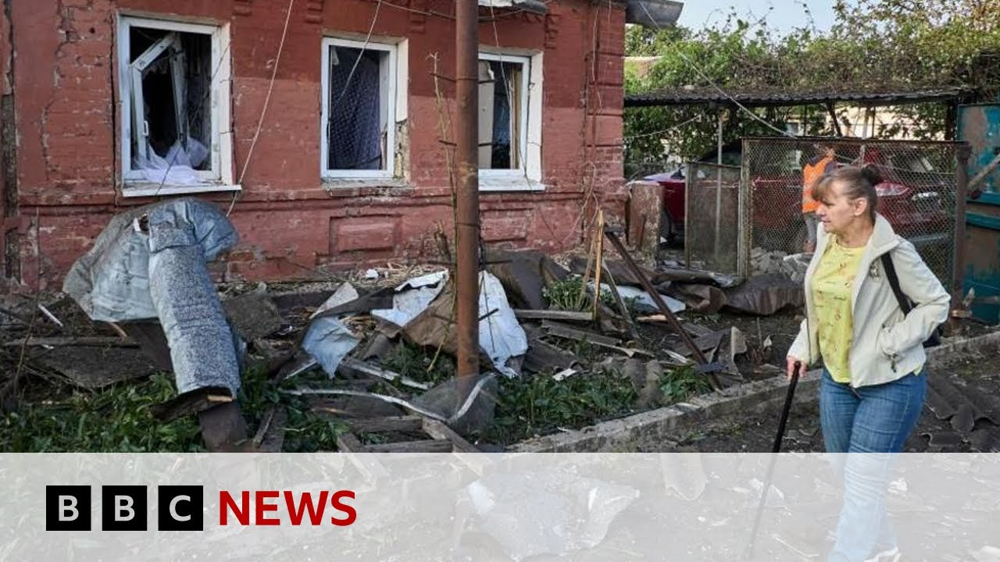

【俄罗斯和乌克兰在伊斯坦布尔和平会谈前几小时交火 | BBC新闻】
Summary: Russian and Ukrainian delegations arrive in Istanbul for peace talks, presenting ceasefire demands despite recent Ukrainian drone strikes on Russian airbases, showcasing Ukraine's resilience and strategic capabilities ahead of negotiations.
摘要： 俄罗斯和乌克兰代表团抵达伊斯坦布尔举行和平会谈，尽管乌克兰近期对俄罗斯空军基地发动无人机袭击，双方仍将提出停火要求，此举展示了乌克兰在谈判前的韧性和战略能力。

⏱️ Estimated Reading Time: 9 min
Russian and Ukrainian delegations have arrived in Istanbul for a second round of peace talks.
俄罗斯和乌克兰代表团已抵达伊斯坦布尔，进行第二轮和平会谈。
Both sides will present documents outlining their ceasefire demands.
双方将提交概述其停火要求的文件。
The meeting is still going ahead despite Ukraine destroying 40 Russian bomber planes in a large-scale drone attack on Russian air bases on Sunday.
尽管乌克兰周日对俄罗斯空军基地发动大规模无人机袭击，摧毁了40架俄罗斯轰炸机，会谈仍将继续进行。
This video appears to show the attack as drones were launched from inside Russia.
这段视频似乎显示了袭击过程，无人机是从俄罗斯境内发射的。
President Zelensky says operation spiderweb took more than a year and a half to plan and described it as absolutely brilliant.
泽连斯基总统表示，“蜘蛛网”行动策划了一年半多，并称其“绝对出色”。
The scale of the operation is vast with the strikes hitting at least four different airfields from western Russia, Moscow, and reaching the country's far east, thousands of miles from Ukraine.
此次行动规模庞大，袭击了至少四个不同的空军基地，从俄罗斯西部、莫斯科延伸到该国远东，距离乌克兰数千英里。
Russia's defense military has said it shot down 162 Ukrainian drones fired overnight after Ukraine launched attacks on Russia's Kursk region that borders Ukraine.
俄罗斯国防部表示，在乌克兰对与乌接壤的俄罗斯库尔斯克地区发动袭击后，俄军一夜之间击落了162架乌克兰无人机。
Our correspondents Paul Adams in Kiev and Hugo Basha in Istanbul have been looking at the details of this latest round of Ukrainian strikes and what impact they might have on any prospective peace deal.
本台记者基辅的保罗·亚当斯和伊斯坦布尔的雨果·巴沙一直在研究乌克兰最新一轮袭击的细节及其对潜在和平协议的影响。
We only have an account from Ukrainian sources on how this was conducted and they obviously want to present a narrative, but it's a pretty astonishing narrative.
我们只有乌克兰方面关于行动过程的描述，他们显然想传递某种说法，但这确实是一个相当惊人的说法。
The idea that scores of drones were smuggled into Ukraine, loaded into pallets, then put aboard trucks that were then driven possibly by unsuspecting drivers to these air bases across the breadth of Russia where the drones were then launched remotely one by one and able to target those aircraft sitting on the tarmac.
据称，数十架无人机被偷运进乌克兰，装入托盘后装上卡车，可能由不知情的司机运往俄罗斯各地的空军基地，随后无人机被远程逐一发射，并精准打击停机坪上的飞机。
This is an astonishing feat of intelligence and organization which as the Ukrainians have said has taken a long time to plan and execute and is clearly designed and would have been designed even a year and a half ago when they first came up with this idea to tell Russia and the world that Ukraine is not finished that it is not necessarily on the back foot.
这是情报与组织的惊人壮举，正如乌克兰所言，策划和执行耗时长久，且显然早有设计——甚至一年半前萌生此想法时就已布局，旨在向俄罗斯和世界宣告乌克兰并未溃败，也未必处于下风。
It may be losing territory inch by inch in the east of Ukraine, but that it is still capable of delivering heavy blows at the heart of Russia's military machine and a message not only to Russia, you say to the rest of the world and importantly to the US as well ahead of these peace talks.
尽管乌克兰东部领土正逐渐沦陷，但它仍能对俄罗斯军事核心实施重击，这不仅是对俄罗斯的讯息，也是对世界——尤其是美国——在和平会谈前的表态。
If people will remember the infamous encounter between President Zelensky and Donald Trump in the Oval Office earlier this year in which Donald Trump said to President Zelensky that he had no cards to play.
若人们还记得今年早些时候泽连斯基总统与特朗普在椭圆形办公室的那次著名会面——当时特朗普对泽连斯基说他“无牌可打”。
Well, in the wake of what happened yesterday, Ukraine is awash with internet memes showing President Zelensky dressed in a suit of cards or as the king of drones as he's been dubbed in one social media post.
而在昨日事件后，乌克兰网络疯传表情包：泽连斯基总统身着扑克牌套装，或被某社交媒体帖子戏称为“无人机之王”。
In other words, that the Ukrainians have become frustrated with the notion that somehow this is a country staring defeat in the face and willing to sue for peace at any price.
换言之，乌克兰人对“这个国家正面临失败且不惜代价求和”的说法已感到愤懑。
It is saying to Washington, no, that is not the case.
它正对华盛顿表明：不，事实并非如此。
Do not work on the assumption that we are simply going to roll over and accept whatever peace you, the United States, are able to extract from Russia.
别以为我们会轻易屈服，接受美国能从俄罗斯争取到的任何和平条件。
We have a say in this process, too.
我们在此过程中同样拥有发言权。
Well, let's bring in Hugo Basha who's live for us in Istanbul.
现在连线我们在伊斯坦布尔的现场记者雨果·巴沙。
And Hugo, how are these strikes likely to impact this next round of peace talks there?
雨果，这些袭击可能如何影响即将举行的新一轮和平会谈？
Well, I think it's very interesting because as Paul was saying, this sends a message not only to Russia, but also to the US and other Western allies that Ukraine is still fighting.
我认为这很有趣，正如保罗所说，这不仅向俄罗斯，也向美国和其他西方盟友传递了乌克兰仍在战斗的信号。
It hasn't been defeated.
它尚未被击败。
And it is not going to be forced to accept major concessions to strike a deal.
且不会被迫为达成协议接受重大让步。
I think here in Istanbul few people are expecting a breakthrough because Russia and Ukraine remain far apart in these negotiations.
我认为在伊斯坦布尔，几乎无人期待突破，因为俄乌在这些谈判中仍分歧巨大。
Ukraine has demanded an unconditional ceasefire in these talks which has been rejected by Russia and I think a lot of people are questioning Russia's real intentions here in these talks.
乌克兰要求无条件停火，但遭俄罗斯拒绝，许多人质疑俄方在会谈中的真实意图。
The Ukrainians say that Russia is not really interested in pausing the conflict, in ending the war.
乌克兰称俄罗斯并非真心想暂停冲突或结束战争。
We've seen that in recent weeks, Russia has actually intensified its air strikes on Ukraine.
近几周我们看到，俄罗斯事实上加强了对乌空袭。
And Ukrainian officials also say that there have been indications that Russia is planning a summer offensive to try to seize even more Ukrainian territory.
乌克兰官员还表示，有迹象表明俄罗斯正计划夏季攻势，企图夺取更多乌领土。
And they have been accusing President Putin of delaying tactics, of stalling for time in these negotiations and of not really being interested in striking a deal.
他们指控普京总统采用拖延战术，在谈判中争取时间，并无意真正达成协议。
And there may be a reason for that because both countries are under pressure from President Trump to reach a deal.
这可能另有原因——两国都面临特朗普总统要求达成协议的压力。
The Ukrainians obviously need American military support.
乌克兰显然需要美国军事支持。
They want to stop the violence in the country and Russia is interested in the easing of economic sanctions.
他们希望停止国内暴力，而俄罗斯则关注经济制裁的缓解。
So that may be the reason why they are engaging in these negotiations and many suspect they're not really interested in striking a deal here.
这或许是双方参与谈判的原因，但许多人怀疑他们并无诚意在此达成协议。
Little hope of progress there in Istanbul, Hugo, but do we know who's actually going to be in the room for these talks and what might be on the agenda?
伊斯坦布尔取得进展的希望渺茫，雨果，但我们是否知道实际参与会谈的人员及议程内容？
Yes, so the Russian delegation is being led by a top Kremlin official and the Ukrainian team is being led by the Ukrainian defense minister.
是的，俄罗斯代表团由克里姆林宫高层官员率领，乌克兰团队则由乌国防部长带队。
We haven't had the terms of the Russian demands made public and we know that in recent weeks Russian officials have continued to voice those demands that have already been rejected multiple times by the Ukrainians such as a limit to the size of the Ukrainian military also recognition of Ukrainian territory that has been seized by Russia including Crimea and the Ukrainians again are saying that they want a ceasefire now, unconditional ceasefire before they can discuss terms of a long-term deal for this conflict, which again has been rejected by Russia.
俄方要求的具体条款尚未公开，但近几周俄官员持续提出已被乌方多次拒绝的条件，如限制乌军规模、承认包括克里米亚在内的被俄占领土。乌方则再次表示希望立即无条件停火，再讨论冲突长期解决方案条款——这同样遭俄方拒绝。